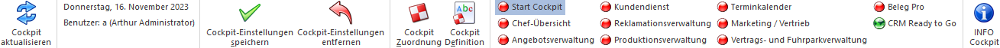

In der Applikation WinLine START stehen insgesamt 11 individuell zu gestaltende WinLine START-Cockpits zur Verfügung. Die Anzeige des zuletzt genutzten Cockpits erfolgt hierbei automatisch, d.h. es ist keine Anwahl eines Menüpunktes notwendig.

Die Änderung von bestehenden Cockpits erfolgt über den Button "Cockpit Definition". Die Anlage und Zuweisung von neuen Cockpits mit Hilfe des Buttons "Cockpit Zuordnung".
Hinweis
Bei dem ersten Aufruf der WinLine werden folgende Cockpits für den Benutzer automatisch angelegt bzw. zugeordnet:
ü Start Cockpit -> Cockpit 1
ü Work Cockpit -> Cockpit 2
ü Data Cockpit -> Cockpit 3
ü SMART -> Cockpit 5 (Standard-Cockpit)
ü Kassa -> Cockpit 8 (Standard-Cockpit)
ü Verwaltung -> Cockpit 9 (Standard-Cockpit)
ü CRM Ready to Go -> Cockpit 10
ü Mobile Connect -> Cockpit 11
Buttons

Ø Cockpit aktualisieren
Durch Anwahl des Buttons "Cockpit aktualisieren" wird der gesamte Inhalt des Cockpits aktualisiert und neu aufgebaut.
Ø aktuelle Daten
Im weiteren Bereich werden die aktuellen Anmeldeinformationen angezeigt, welche aus den folgenden Elementen bestehen:
ü Tagesdatum
ü Angemeldeter Benutzer
Ø Cockpit-Einstellungen speichern
Über die Cockpit Definition kann der Inhalt des Cockpits hinterlegt werden, d.h. welche Elemente sollen im Cockpit vorhanden sein. Alle weiteren Einstellungen, z.B. Größe und Position von Elementen oder die Widget-Einstellungen (siehe auch Zusätzliche Funktionen im Cockpit), werden direkt im Cockpit definiert und können mit Hilfe des Buttons "Cockpit-Einstellungen speichern" gespeichert werden.
Hinweis
Die Größe und Position von Elementen wird benutzerbezogen gespeichert. Widget-Einstellungen hingegen werden in der Cockpit-Definition abgelegt, wobei das Objektrecht "bearbeiten" (oder höher) für das Cockpit vorhanden sein muss.
Ø Cockpit-Einstellungen entfernen
Mit Hilfe des Buttons "Cockpit-Einstellungen entfernen" werden alle benutzerspezifischen Anpassungen am Cockpit verworfen und der Standard gemäß Cockpit-Definition wiederhergestellt.
Ø Cockpit Zuordnung
Durch Anwahl des Buttons "Cockpit Zuordnung" wird das Programm Cockpit-Zuordnung gestartet. In diesem können folgende Haupttätigkeiten durchgeführt werden:
ü Erstellung von neuen WinLine START Cockpits
ü Änderung von bestehenden WinLine START Cockpits
ü Zuweisung von WinLine START Cockpits an Benutzer oder Benutzergruppen
Ø Cockpit Definition
Durch Anwahl des Buttons wird das Fenster Cockpit Definition geöffnet, in welchem der Aufbau des Cockpits definiert werden kann.
Hinweis
Der Button kann nur angewählt werden, wenn das Objektrecht "bearbeiten" (oder höher) für das Cockpit vorhanden ist.
Ø Cockpitauswahl
An dieser Stelle kann durch Auswahl eines Cockpits direkt in dieses gewechselt werden.
Hinweis
Die Cockpits (außer "Mobile Connect") können auch per Tastenkombination (STRG + 0 bis 9) gewechselt werden.
Ø INFO Cockpit
Durch Anwahl dieses Buttons wird direkt in die WinLine INFO gewechselt und das INFO-Cockpit dargestellt.